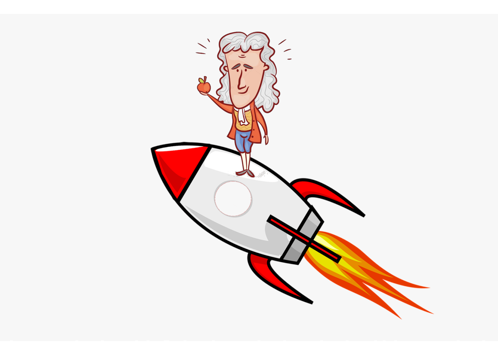

Back to home
Newton's law of motion
Some important videos
Brief History
Sir Isaac Newton (1642-1727) was a British physicist who, in many respects, can be viewed as the greatest physicist of all time. Though there were some predecessors of note, such as Archimedes, Copernicus, and Galileo, it was Newton who truly exemplified the method of scientific inquiry that would be adopted throughout the ages. For nearly a century, Aristotle's description of the physical universe had proven to be inadequate to describe the nature of movement (or the movement of nature, if you will). Newton tackled the problem and came up with three general rules about the movement of objects which have been dubbed as "Newton's three laws of motion." In 1687, Newton introduced the three laws in his book "Philosophiae Naturalis Principia Mathematica" (Mathematical Principles of Natural Philosophy), which is generally referred to as the "Principia." This is where he also introduced his theory of universal gravitation, thus laying the entire foundation of classical mechanics in one volume.
Important link
LanchUseful formula